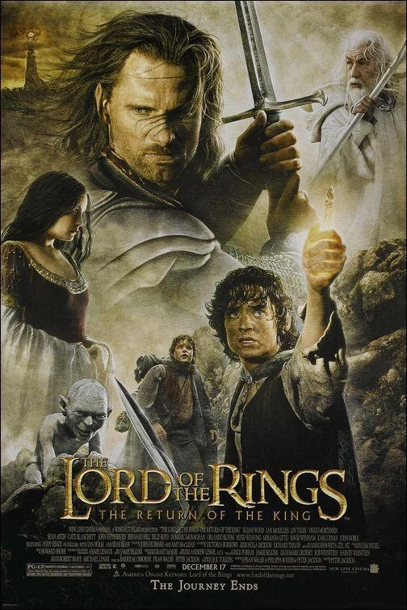

Ficha de la película
Año: 2003
Director: Peter Jackson
Novela: J.R.R. Tolkien
Duración: 201min
Saga: EL SEÑOR DE LOS ANILLOS
Reparto principal:
Elijah Wood, Ian McKellen, Viggo Mortensen, Sean Astin, Orlando Bloom, John Rhys-Davies, Dominic Monaghan, Billy Boyd, Andy Serkis, Bernard Hill, Miranda Otto, Karl Urban, David Wenham, Hugo Weaving, Liv Tyler, Cate Blanchett, John Noble, Ian Holm
Sinopsis
Las fuerzas de Sauron atacan Minas Tirith, la capital de Gondor, en su batalla final contra la humanidad. Mientras Gandalf intenta movilizar las defensas y Aragorn debe aceptar su destino como verdadero rey reclutando a un ejército de espectros, Rohan acude al rescate en los Campos del Pelennor. Al mismo tiempo, Frodo y Sam penetran en el corazón de Mordor para alcanzar el Monte del Destino y destruir el Anillo Único, enfrentando la traición de Gollum y el agotamiento extremo en la última gran prueba de la Tierra Media.
Personajes que aparecen
Frodo Bolsón · Samwise Gamgee · Gollum / Smeagol · Aragorn · Legolas · Gimli · Gandalf · Merry · Pippin · Théoden · Éowyn · Éomer · Faramir · Denethor · Rey de los Muertos · Señor de los Nazgûl (Rey Brujo) · Arwen · Elrond · Galadriel · Bilbo Bolsón
Lugares importantes
Minas Tirith · Campos del Pelennor · Las Sendas de los Muertos · Cirith Ungol · Monte del Destino (Orodruin) · La Puerta Negra · Los Puertos Grises
Objetos importantes
Anillo ÚnicoEspada Andúril (la Llama del Oeste)Redoma de GaladrielEl Cuerno de Gondor (roto)Palantír de Minas Tirith Corona de GondorCuriosidades
Récord histórico en los Óscars: Ganó los 11 premios Oscar a los que estuvo nominada, igualando el récord histórico de Ben-Hur y Titanic, y convirtiéndose en la primera película de fantasía en ganar el premio a Mejor Película.
El camuflaje de los extras: Para la batalla final frente a la Puerta Negra y los Campos del Pelennor, la producción se quedó sin extras masculinos para montar a caballo, por lo que la gran mayoría de los jinetes de Rohan eran mujeres neozelandesas disfrazadas con barbas postizas.
Miedo a las arañas: Peter Jackson sufre de una severa aracnofobia, por lo que basó el diseño de Ella-Laraña (Shelob) en los tipos de arañas que más terror le causaban en Nueva Zelanda.